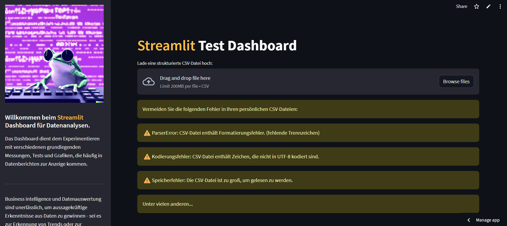

Use of Streamlit to convert raw data from CSV files into an interactive dashboard web application and provision
of a serverless user interface powered by Python code.
Dashboards play a crucial role in data analysis by providing a visual and interactive way to present,
analyze, and manage data. They enable professionals to derive actionable insights, monitor trends, and make
informed decisions. Dashboards can display data visualizations, statistical analyses, machine learning
model outputs, and much more. Making them an extremely useful tool for any programmer as a way to introduce
newcomers to data analysis.
Dashboard at the end of the day are tools that helps in presenting exploratory data analysis results and
showcase model performance metrics. This enables users that have no experience with programming to be able
to view predictions and recommendations from machine learning models, as well as visualize historical
trends and patterns through a user-friendly dashboard.
Download a dummy csv file in order to test the streamlit dashboard functions:
The goal of this project is to demonstrate how raw datasets (usually in the form of csv files) can be
transformed into interactive and insight visual analytics tools using Streamlit. This dashboard was
built to showcase key aspects of exploratory data analysis (EDA), forecasting and statistical modeling in a
way that is accessible to both technical and non-technical users.
By providing a no-code, browser-based interface, the project bridges the gap between backend analytics and
frontend interpretation, making it an ideal solution for analysts, researchers, and decision-makers that
practice Business intelligence by analyzing business data and transform it into actionable insights for
strategic and tactical decision-making.
Business intelligence and data analytics are essential for gaining meaningful insights from data, which is
why interactive dashboards help bridge the gap between the theoretical and abstract methods of data
analytics and a visual medium that might lead to concrete data-based decisions.
Streamlit is a popular Python library specifically designed for Data Visualization where elements such as
charts, graphs, heatmaps, and maps help convey data patterns and trends more effectively than raw numbers,
and with the help of Streamlit, these elements can have an interactive element that gives additional value
to all visualization tools.
By clicking the following button, the Streamlit Dashboard will open and showcase filtering tools, summary
statistics, data visualizations and model outputs with complete user control. It's main purpose is to guide
both technical and non-technical users through core data science concepts such as distribution analysis,
skewness, variability and forecasting.

With Streamlit, a simple, data driven web application for data science projects can enabling users to
manipulate dataframes, plot metrics, perform analysis tests and deploy Python functions without the need of
installing a Python interpreter.
This Streamlit application includes a range of dynamic features that allow users to upload their own
datasets and explore key insights. The app automatically detects data types, handles data cleaning (e.g.,
numeric conversion), and provides multiple tabs to analyze categorical, numerical, and time series data,
offering visualizations and SARIMA-based forecasting.
CATEGORICAL ANALYSIS
The dashboard includes tailored tools for working with different data types. Categorical variables are
analyzed using bar and pie charts to highlight frequency distributions and imbalances across groups, and
involves analyzing and summarizing data that falls into different categories or groups.
A frequency distribution is very useful when working with categorical data, as it provides a clear and
concise summary of how the different categories or values within a categorical variable are distributed
within a data set. Bar charts provide a clear representation of the frequency distribution of categories
and are therefore ideal for identifying dominant groups, rare events, and imbalances in the data.
These charts support comparative analysis between groups and are particularly useful when interpreting
nominal or ordinal variables. In contrast, pie charts emphasize the relative proportions of each category
and provide a more intuitive representation when it comes to conveying how much each group contributes to
the whole.
Together, these visualizations help users assess the structure, balance, and potential bias of categorical
features, which is critical when preparing data for modeling or interpretation. When not all categories in
a categorical variable are equally represented, this can have several negative effects on data analysis and
interpretation.
This is because when one category dominates the distribution, it leads to a skewed perception of the
overall data patterns, resulting in biased analysis and erroneous statistical significance, which in turn
affects model performance.
Many statistical methods assume that data is normally distributed. When data is skewed, transformations may
be necessary to meet these assumptions and ensure the validity of tests such as ANOVA, t-tests, and
correlation analysis.
NUMERICAL ANALYSIS
Numerical features are summarized using descriptive statistics—mean, median, variance, skewness, and
more—alongside visual tools like box plots and histograms that help identify outliers and distribution
patterns. Box plots provide a compact summary of distribution characteristics—such as median, dispersion,
skewness, and outliers—so users can identify anomalies and assess variability at a glance while Histograms
complement box plots by illustrating the frequency of values across defined intervals (bins), helping users
understand the shape, modality, and skewness of the distribution.
The box plot function is a key tool in statistical data analysis. It summarizes the distribution of a
numerical variable using important quantiles (minimum, Q1, median, Q3, maximum) and highlights potential
outliers. Boxplots are crucial for quickly assessing the symmetry, skewness, and dispersion of data, as
well as for identifying extreme values that could affect downstream models or analyses.
These charts support comparative analysis between groups and are particularly useful when interpreting
nominal or ordinal variables. In contrast, pie charts emphasize the relative proportions of each category
and provide a more intuitive representation when it comes to conveying how much each group contributes to
the whole.
Numerical data analysis focuses on summarizing properties such as central tendency (mean, median, mode),
dispersion (standard deviation, variance), and shape (skewness, kurtosis). Summary statistics provide a
compact, informative snapshot of a dataset's characteristics.
TIME SERIES MODELING
Finally, the time series chart combines data visualization with forecasting by using an SARIMA model to
identify trends and predict future values, with uncertainty accounted for through confidence intervals.
These charts provide a comprehensive toolkit for analyzing numerical variables, validating assumptions, and
generating predictive insights.
Time series analysis involves examining historical data points over time intervals by looking at
seasonality, trends, and fluctuations within the data, which can later be explored using techniques such as
SARIMA models.
With the time series plot feature, users can visualize how a numerical variable evolves over time and
extend this analysis to the future using SARIMA (Seasonal Autoregressive Integrated Moving Average)
modeling. Time series analysis is essential for uncovering temporal trends, seasonality, cyclical behavior,
and pattern shifts.
For this interactive dashboard, we use an SARIMA model, which stands for Seasonal (S), Autoregressive (AR),
Integrated (I), and Moving Average (MA), which is particularly effective for capturing complex patterns,
trends, and seasonality in time series data. (The model contains fixed p, d, and q values.)
Each component of the dashboard reflects a foundational concept in data science and statistics. Frequency
analysis supports classification and categorical encoding decisions; summary statistics underpin modeling
assumptions and feature engineering; and time series modeling allows for prediction, anomaly detection, and
operational planning.
In real-world scenarios, dashboards like this could support energy forecasting, financial analysis,
retail demand tracking, or administrative decision-making—anywhere rapid, visual interpretation of
structured data is needed.
STREAMLIT
Streamlit is designed with simplicity and speed in mind. Its syntax is intuitive and mirrors the structure
of a Python script, allowing data scientists and analysts to go from idea to app in minutes. Streamlit
automatically renders widgets, charts, and text outputs as you write your script, without requiring a
background in HTML, CSS, or frontend logic.
This makes it ideal for rapid prototyping, internal tools, or teaching environments where accessibility and
interactivity are key. Its seamless integration with data science libraries such as Pandas, Seaborn, and
Statsmodels making it more focused more on analysis than interface design.
DASH
Dash, on the other hand, offers a more advanced, production-ready environment and allows for highly
customized layouts, multi-page applications, with more granular control over component behavior via
callbacks and frontend routing.
This additional control makes Dash suitable for situations where applications must be deployed publicly,
integrated into enterprise platforms, or optimized for user experience across multiple roles or devices.
However, this flexibility comes with complexity as Dash requires a deeper understanding of UI logic and
application structure, often necessitating more development time.
Ultimately, both tools empower data professionals to build powerful, browser-based tools using only
Python—but the choice between Streamlit and Dash depends on whether your priority is speed and simplicity
or control and customization.